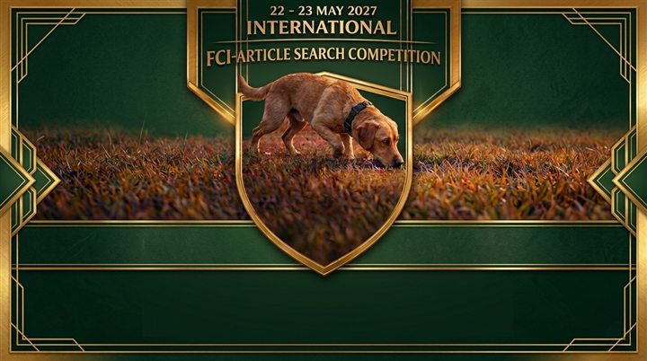

FCI-StöPr 1–3
Alle Teilnehmenden starten an zwei aufeinanderfolgenden Tagen. Gewertet werden Einzel- und Länder-Mannschaften.
Internationaler Hundesport
Sportliche Präzision, konzentrierte Nasenarbeit und internationale Begegnung in Kärnten.
Über den Cup
Der Internationale FCI-StöPr Wettbewerb 2027 bringt Teams aus verschiedenen Ländern zu zwei aufeinanderfolgenden Bewerbstagen in Villach zusammen. Ausgetragen werden die Prüfungsstufen FCI-StöPr 1 bis 3 mit Einzel- und Mannschaftswertung.

Bewerbsinformationen
Alle Teilnehmenden starten an zwei aufeinanderfolgenden Tagen. Gewertet werden Einzel- und Länder-Mannschaften.
Pro Land sind höchstens 3 Starts in FCI-StöPr 1, 3 in FCI-StöPr 2 und 5 in FCI-StöPr 3 vorgesehen. Eine Hundeführerin oder ein Hundeführer startet mit einem Hund.
Vorgesehen sind Veterinär- und Wesenskontrolle, ein englisches Veterinärattest sowie der Nachweis einer Hundehalter-Haftpflichtversicherung.
Österreichisches Team
Die bisher veröffentlichte österreichische Übersicht nennt drei positive Regionalcup-Ergebnisse und genügend Punkte für die ÖKV-Leistungssiegerprüfung Stöbern als Grundlage.
Mindestens drei positive Ergebnisse im Regionalcup erreichen.
FCI-StöPr 1 und 2: jeweils einmal starten. FCI-StöPr 3: zweimal starten.
3 Startplätze in FCI-StöPr 1, 3 in FCI-StöPr 2 und 5 in FCI-StöPr 3.
Organisation
Weitere Vereins- und Veranstalterangaben werden nach Bestätigung ergänzt.
Namen und Funktionen erscheinen hier nach offizieller Bestellung.
Ansprechpersonen und Zuständigkeiten werden vor der Veranstaltung veröffentlicht.
Impressionen
Vorhandenes, freigegebenes Bildmaterial. Weitere Sportfotos werden ergänzt.